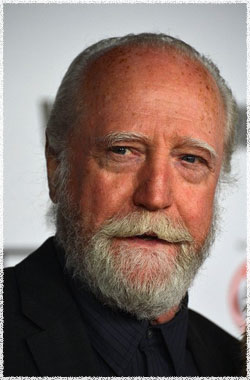

Скотт Уилсон
 Хершел Грин владеет фермой, где Рик и другие оставшиеся в живых просят убежища после апокалипсиса. Бывший алкоголик и человек веры, Хершел чувствует себя обязанным защитить гостей на какое-то время, но скоро раздражается из-за их вторжения.
Его впечатляющий дебют в кино произошёл в 1967 году в двух самых классических фильмах киноиндустрии: Полуночная жара режиссера Нормана Джуисона и Хладнокровно Ричарда Брукса, Охрана замка Сидни Поллака, Великий Гэтсби Джека Клейтона, Девятая конфигурация Уильяма Питера Блэтти, Мертвец идёт с Тимом Роббинсом, Год спокойного солнца и Брат нашего Бога Кшиштоф Занусси.
Роли Уилсона традиционно были выделены в качестве основных в более чем семидесяти ключевых кинофильмах и тщательно отобранных телевизионных фильмах в течение всей карьеры. Он играл владелеца казино Сэма Брауна, Отце Ив Екатерины, в CSI, расследование преступления и в настоящее время снимается в роли Хершеля Грина в Ходячих мертвецах канала AMC.
Он завоевал многочисленные награды фестиваля и был удостоен Гильдии Киноактёров США с вручением премии Ральфа Моргана за преданность актёрскому делу. Уилсон живет в Лос-Анджелесе.
Наиболее известен по фильмам:
Последний самурай
Перл Харбор
Полуночная жара
Мертвец идет
Монстр
Секретные материалы
Правосудие